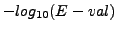

Next: Graph clustering
Up: Network Analysis Tools (NeAT)
Previous: Node degree statistics
Contents
Subsections
In a graph, the neighbours of a node consist in the set of nodes that are connected
to this node up to a certain distance, i.e., the number of steps
between the source node and its neighbours. In weighted graphs, one can also consider the neighbours up to
a certain maximal weight.
In the following, we will refer to the node for which we search the neighbours the seed node.
According to the type of graph, it might be
interesting to retrieve the neighbours of the nodes in a graph.
For example, in protein-protein interaction network, the function of the neighbours of a protein whose
biological role is unknown might give insights in the function of the protein.
Moreover, in interaction graphs, if a group of neighbours have similar biological functions, they are likely to
form a structural complex.
In co-regulation networks, where each node is a gene and an edge between two genes means that those genes are
co-regulated (i.e. co-repressed and co-expressed), exploring the neighbours of the nodes may help in the discovery of
new regulons.
In the following, we will illustrate the study of nodes neighborhood by looking for neighbours of some orphan proteins (i.e. protein of unknown function) in a protein protein interaction network. We will then look if the neighbours of these proteins present similar functions.
In this demonstration, we will analyze the neighbours of the orphan nodes of the
Gavin et al (2006) interaction data set. These interaction data were obtained
by co-immunoprecipitation followed by a mass spectrometry experiment in order to
discover structural protein complexes. [10].
This network contains 6531 interactions between 1430
proteins.
We will then compare these groups of neighbours with functionnal classes of proteins annotated in the MIPS [23] in order to detect if the groups of neighbours present a significatively high number of co-regulated proteins.
- In the NeATmenu, select the command get node neighborhood.
In the right panel, you should now see a form entitled
``graph-neighbours''.
- Go on the demo dataset download web page.http://rsat.scmbb.ulb.ac.be/rsat/data/neat_tuto_data/ and download the files gavin_2006_names.tab, orphan_gavin.tab and mips_name_class_description.tab on your computer.
- In the Upload graph from file text area, load the file gavin_2006_names.tab you just downloaded.
- Uncheck Include each node in its neighborhood (with a distance of zero)
- Check the radio-button Node selection in the seed node part of the form
- In the Upload seed nodes from file text area, load the file orphan_gavin.tab.tab you just downloaded.
- Click on the button GO.
The computation should take less than one minute.
The result page should display the results in the tab-delimited or HTML format. These files will be described in the section Interpretation of the results
- We will now see if the different groups of neighbours contain a significantly high number of proteins of similar
function. To this, we will compare the groups of neighbours we just obtained with annotated groups of proteins, e.g., the genes annotated according to the gene ontology [4] or, in this example, according to the functionnal classes of the MIPS [23]. In the Next step pannel, click on the button Compare the groups of neighbours.
You are redirected to the form of another program compare-classes that allows to compare two class
files (the query file and the reference file). Each class of a query file is compared to each class of a
reference file. The number of common elements is reported, as well as the probability to observe at least this
number of common elements by chance alone. The query classes are already loaded and consist in the different groups of neighbours we discovered previously with graph-neighbours.
- In the Upload reference classes from file text area, load the file mips_name_class_description.tab downloaded in the first part of this tutorial. The classes files are two column files, the first column contains the elements and the second column the class to which the elements belong. Elements may belong to more than one class.
- The default paramaters are sufficient. We will only keep the comparison presenting a significance higher than 0.
- Click on the button GO.
- You obtain the links to the result file in the tab-delimited format or in the HTML format. The obtained results will be described in the next section.
If you have installed a stand-alone version of the NeAT distribution,
you can use the program graph-neighbours on the
command-line. This requires to be familiar with the Unix shell
interface. If you don't have the stand-alone tools, you can skip this
section and read the next section (Interpretation of the results).
We will now describe the use of graph-neighbours as a command line tool.
The Gavin et al (2006) [10] co-immunoprecipitation dataset described
in the previous section and the other files necessary for this tutorial
may be downloaded at the following address http://rsat.scmbb.ulb.ac.be/rsat/data/neat_tuto_data/ (gavin_2006_names.tab, orphan_gavin.tab and mips_name_class_description.tab).
- The first step consist in applying graph-neighbours on the co-immunoprecipitation dataset. To this, go into the
directory where you downloaded the files gavin_2006_names.tab, orphan_gavin.tab and use this command.
graph-neighbours -v 1 -i gavin_2006_names.tab \
-seedf orphan_gavin.tab \
-o gavin_2006_orphan_neighbours_1.tab
The file gavin_2006_orphan_neighbours_1.tab is created and contains for each node of the seed file the list of its direct neighbours, i.e., for each protein, the list of proteins that co-precipitated with it.
- In the second step, we will compare these groups of neighbours to different groups of annotated proteins in order to discover if the groups of neighbours do contain a significatively high number of proteins of similar functions. This will give insights into the function of the orphans proteins used as seed nodes in the first step. To this, we will use the RSAT compare-classes program that allows to compare two class
files (the query file and the reference file) (see previous section or the RSAT tutorial for a more complete description of compare-classes). Use the following command to compare the two files.
compare-classes -v 1 \
-q gavin_2006_orphan_neighbours_1.tab -r mips_name_class_description.tab \
-sort sig -return proba,occ,jac_sim \
-o gavin_2006_orphan_neighbours_1_cc_mips_functionnal_classes.tab -lth sig 0
We obtain a file gavin_2006_orphan_neighbours_1_cc_mips_functionnal_classes.tab containing the significant comparaison results. We will discuss it in the following section (interpretation of the results).
According to the requested level of verbosity, the result file may first contain several lines (starting with ``#'' or ``;''). These deliver some information about the analysed graph (number of nodes, edges, seed nodes, ...).
The results are then displayed in four columns.
- Name of the neighbour.
- Name of the seed node (for which the neighbours are seeked in the graph).
- Distance between the seed node and its neighbour (number of steps).
- The last column, only relevant for directed graph, indicate whether the arc between the seed node and its neighbour is an out- or an in-going arc.
This file can be considered as a class file (see above for a more complete description) with the name of the neighbour being the member (first column) and the name of the seed node, the name of the class (second column).
The result of the comparaison between the groups of neighbours and the MIPS annotated classes are displayed in a multi-column file sorted by decreasing order of significance. When looking at the HTML version of the file, you may click on the header on the column to sort the table according to this field.
Each line displays the comparaison between a MIPS annotated class (reference class) and a group of neighbours (query class). What we want to know is if there is a significatively high number of members of the same MIPS class in a given group of neighours.
- ref : Name of the MIPS functionnal class.
- query : Name of the group of neighbours (seed node).
- R : Size of the reference class (number of members in this MIPS class).
- Q : Size of the query class (number of neighbour for this seed node).
- QR : Intersection size between the group of neighbours and the functionnal class.
- QvR : Union size between the group of neighbours and the functionnal class.
- R!Q : Elements that are in the functionnal class but not in the groups of neighbours.
- Q!R : Elements that are not in the functionnal class but are in the groups of neighbours.
- !Q!R : Elements that are not in the functionnal class nor in the groups of neighbours.
- P-val : P-value of the comparaison, propability (according to the hypergeometric law) to be wrong when claimin that there is a significatively high number of proteins of the same class in the group of neighbours.
- E-val : E-value of the comparaison. P-value multiplied by the total number of comparaisons. This value corresponds to the estimated number of false positives for a given P-value threshold.
- sig : Significance of the comparaison. This correpsonds to
. This index gives an intuitive perception of the exceptionality of the common elements : a negative significance indicates that the common matches are likely to come by chance alone, a positive value that they are significant.
Considering the file, we can observe that 7 seed nodes (on the 46) have a group of neighbours presenting a similar function.
For example, 9 out of the 10 neighbours of the Yil161w protein (interacting with this protein) have their function related to ribosome biogenesis and 8 out of 10 neigbours are located in the cytoplasm. This may indicate that this protein may also be implied in ribosome biogenesis
Next: Graph clustering
Up: Network Analysis Tools (NeAT)
Previous: Node degree statistics
Contents
RSAT
2009-09-04